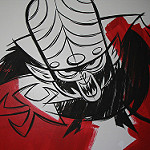

The PPG have delighted children for years. Although there is a 2016 reboot of the animated series, this page will be focused on the original, and in my opinion the superior version created in 1998.
| Season 1 | Season 2 | Season 3 | Season 4 | Season 5 | Season 6 | Total Appearances | |
|---|---|---|---|---|---|---|---|
| Mojo Jojo | 8 | 8 | 6 | 6 | 8 | 13 | 49 |
| Sedusa | 1 | 1 | 2 | 0 | 2 | 3 | 9 |
| Fuzzy Lumpkins | 4 | 2 | 4 | 1 | 6 | 4 | 21 |
| Him | 3 | 1 | 4 | 3 | 2 | 4 | 17 |
| The Amoeba Boys | 3 | 3 | 1 | 1 | 2 | 3 | 13 |
| The Ganggreen Gang | 2 | 4 | 4 | 1 | 5 | 6 | 22 |

The infamous Mojo Jojo
I can believe that Mojo Jojo is the villain with the most appearances, but I can't believe he has over double the appearances as Fuzzy Lumpkins or The Ganggreen Gang!
The original Powerpuff Girls first officially aired in 1998, but were first seen in 1994 as an unoffical pilot. You can watch the video here! Insert additional information here
Do you know what really created the Powerpuff girls?
Seemingly everyone who watches PPG has a favorite or more relatable character of the trio. My favorite Powerpuff Girl is ButtercupBlossom!
Although each episode is different in plot and events, there are a few constants. For example, the intro song is played at the beginning of each episode, and the next sequence includes the opening credits and the name of the episode, which often includes pop-culture references or clever wordplay. I have included some of these titles below.
Additonally, the closing sequence also has the same format each episode. It ends with the narrator saying "And so the day is saved, thanks to The Powerpuff Girls". However, even the closing sequence experiences some changes, and often features other characters if the narrator believes that they saved the day instead.
When the first episode of the PPG debuted on Cartoon Network, it was received as the best premiere in Cartoon Network's history. Additionally, the original series had a record-setting run over their 6 season reign, holding the highest ratings amongst all of its shows overall. This led to a slew of paraphernalia to be sold in all shapes and sizes.
This page was created by Chase Patrick. Email any questions here.